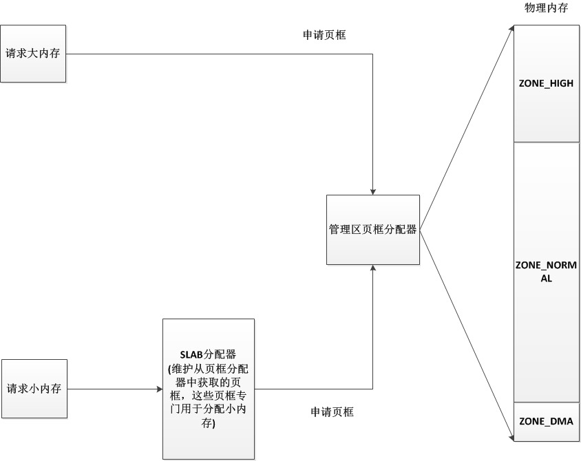
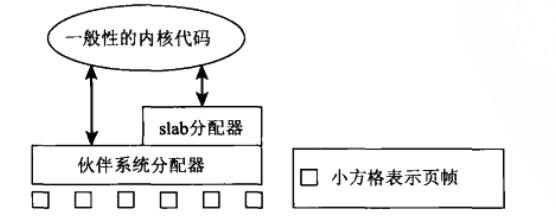
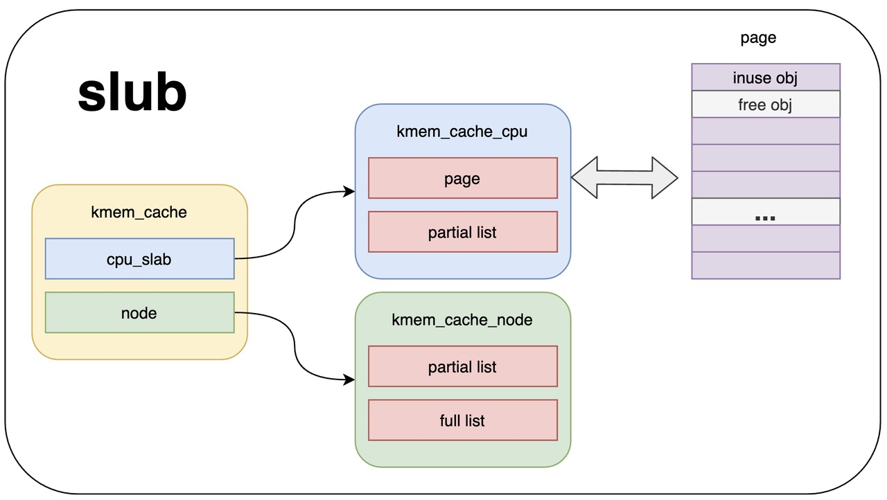
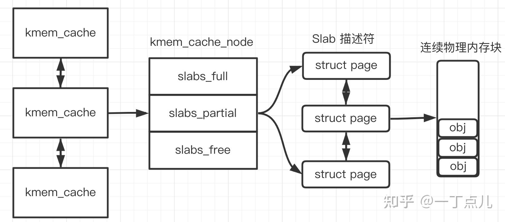
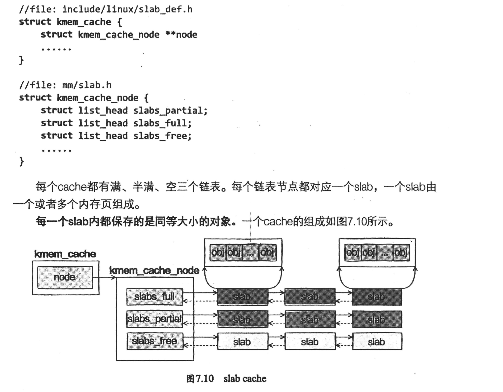

概述
- 本文总结 Linux 内存分配之 slab 层
slab 层作用
- 按字节分配内存,因为默认 Buddy 系统是按页进行分配内存,一个页最小是 4KB, 比如申请一个 20 字节对象结果分配一个 4KB 的页就容易造成浪费
- 维护常用对象的缓存, 对于 inode、task_struct、thread_info、uid、mm_struct、vm_area_struct 等经常频繁分配和释放的内存对象进行缓存，避免经常调用伙伴算法从伙伴系统分配和释放内存
一 内存管理里核心模型之间的关系总结
- 1 物理内存，被分割为最小的单位，一个一个页，也就是一个一个 page。一个 page 通常是 4KB
- 2 内核代码申请内存时，可能大于 4KB，也可能小于 4KB，小于 4KB 时，也至少得分配一个 page，那么就会出现浪费情况。因此 Linux 内核专门做了一层 slab 层。 slab 层 = slab 分配器
- 3 slab 层 和 普通 page 分配器之间的关系，如下图



1 一些结构体的关系
- 每种高速缓存组都由 struct kmem_cache 结构体表示, 有多种高速缓存, 比如 inode,afs_inode,task_struct
-
- 会产生 inode_cachep, afs_inode_cachep, task_struct_cachep
-
- 每个 XX_cachep 会有一个或多个 struct slab, 每个 slab 会有一个或多个 struct page, 每个 slab 中预先申请好多个（比如 1000 个）object，其他内核子系统可以申请使用/回收这些 Object，一些 Object 是专用(比如 mm_cachep)，一些 Object 是通用, 申请使用只是标记对应 Object 已使用, 申请回收只是标记对应 Object 未使用.
-
- 
-
- 
2 核心数据结构
2.1 struct slab（slab 描述符)
实际上没有 struct slab 这个结构体, 但是有这个概念, 每个 struct slab 对应一个或者多个 struct page
kmem_cache_node 记录了 3 种 slab：
-
- slabs_full ：已经完全分配的 slab
-
- slabs_partial： 部分分配的 slab
-
- slabs_free：空 slab，或者没有对象被分配
以上 3 个链表保存的是 slab 描述符，Linux kernel 使用 struct page 来描述一个 slab。单个 slab 可以在 slab 链表之间移动，例如如果一个半满 slab 被分配了对象后变满了，就要从 slabs_partial 中被删除，同时插入到 slabs_full 中去。
来看 page 结构体关于 slab 的部分。struct page 定义在 include/linux/mm_types.h 文件中，与 slab 相关的结构体成员如下所示：
struct page {
union {
struct { /* Page cache and anonymous pages */
...
};
struct { /* slab, slob and slub */
union {
struct list_head slab_list;
struct { /* Partial pages */
struct page *next;
int pages; /* Nr of pages left */
int pobjects; /* Approximate count */
};
};
struct kmem_cache *slab_cache;
/* Double-word boundary */
void *freelist; /* first free object */
union {
void *s_mem; /* slab: first object */
unsigned long counters; /* SLUB */
...
};
};
...
};
};
void *s_mem: 指向该页框中第一个 object 的地址 。struct kmem_cache *slab_cache: struct kmem_cache_node 结构体用其追踪所有 page 的链表。struct list_head slab_list: 用于跟踪此页框属于哪个 slab 链表（full, free, partial），即使用此成员将 list 串联起来。void *freelist: 用于指向页框中空闲对象链表。空闲对象链表包含页框中每个空闲对象的索引。
2.2 struct kmem_cache
常见的 kmem_cache
kernel/user.c:212: uid_cachep = kmem_cache_create("uid_cache", sizeof(struct user_struct),
kernel/fork.c:179: thread_info_cache = kmem_cache_create("thread_info", THREAD_SIZE,
kernel/fork.c:264: kmem_cache_create("task_struct", sizeof(struct task_struct),
kernel/fork.c:1739: mm_cachep = kmem_cache_create("mm_struct",
lib/debugobjects.c:1086: obj_cache = kmem_cache_create("debug_objects_cache",
net/core/net_namespace.c:405: net_cachep = kmem_cache_create("net_namespace", sizeof(struct net),
完整的 kmem_cache 定义
include/linux/slab_def.h
/*
* Definitions unique to the original Linux SLAB allocator.
*/
struct kmem_cache {
/* 1) Cache tunables. Protected by slab_mutex */
unsigned int batchcount;
unsigned int limit;
unsigned int shared;
unsigned int size;
struct reciprocal_value reciprocal_buffer_size;
/* 2) touched by every alloc & free from the backend */
unsigned int flags; /* constant flags */
unsigned int num; /* # of objs per slab */
/* 3) cache_grow/shrink */
/* order of pgs per slab (2^n) */
unsigned int gfporder;
/* force GFP flags, e.g. GFP_DMA */
gfp_t allocflags;
size_t colour; /* cache colouring range */
unsigned int colour_off; /* colour offset */
struct kmem_cache *freelist_cache;
unsigned int freelist_size;
/* constructor func */
void (*ctor)(void *obj);
/* 4) cache creation/removal */
const char *name;
struct list_head list;
int refcount;
int object_size;
int align;
/* 5) statistics */
#ifdef CONFIG_DEBUG_SLAB
unsigned long num_active;
unsigned long num_allocations;
unsigned long high_mark;
unsigned long grown;
unsigned long reaped;
unsigned long errors;
unsigned long max_freeable;
unsigned long node_allocs;
unsigned long node_frees;
unsigned long node_overflow;
atomic_t allochit;
atomic_t allocmiss;
atomic_t freehit;
atomic_t freemiss;
/*
* If debugging is enabled, then the allocator can add additional
* fields and/or padding to every object. size contains the total
* object size including these internal fields, the following two
* variables contain the offset to the user object and its size.
*/
int obj_offset;
#endif /* CONFIG_DEBUG_SLAB */
#ifdef CONFIG_MEMCG_KMEM
struct memcg_cache_params *memcg_params;
#endif
/* 6) per-cpu/per-node data, touched during every alloc/free */
/*
* We put array[] at the end of kmem_cache, because we want to size
* this array to nr_cpu_ids slots instead of NR_CPUS
* (see kmem_cache_init())
* We still use [NR_CPUS] and not [1] or [0] because cache_cache
* is statically defined, so we reserve the max number of cpus.
*
* We also need to guarantee that the list is able to accomodate a
* pointer for each node since "nodelists" uses the remainder of
* available pointers.
*/
struct kmem_cache_node **node;
struct array_cache *array[NR_CPUS + MAX_NUMNODES];
/*
* Do not add fields after array[]
*/
};
2.3 struct kmem_cache_node
mm/slab.h
/*
* The slab lists for all objects.
*/
struct kmem_cache_node {
spinlock_t list_lock;
#ifdef CONFIG_SLAB
struct list_head slabs_partial; /* partial list first, better asm code */
struct list_head slabs_full;
struct list_head slabs_free;
unsigned long free_objects;
unsigned int free_limit;
unsigned int colour_next; /* Per-node cache coloring */
struct array_cache *shared; /* shared per node */
struct array_cache **alien; /* on other nodes */
unsigned long next_reap; /* updated without locking */
int free_touched; /* updated without locking */
#endif
#ifdef CONFIG_SLUB
unsigned long nr_partial;
struct list_head partial;
#ifdef CONFIG_SLUB_DEBUG
atomic_long_t nr_slabs;
atomic_long_t total_objects;
struct list_head full;
#endif
#endif
};